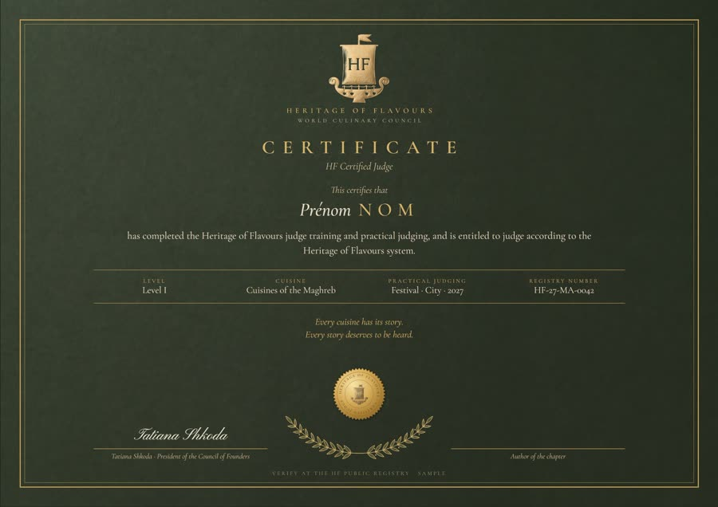

Démonstration du lecteur : une seule vidéo et une voix dans chaque langue, que l’élève choisit lui-même. Les leçons seront hébergées dans un espace protégé, lisibles uniquement sur le site de l’Académie.Демонстрация плеера: одно видео и голос на каждом языке, ученик выбирает сам. Уроки будут храниться в закрытом пространстве и воспроизводиться только на сайте Академии.Player demo: one video and a voice in each language, chosen by the student. Lessons will be hosted in a protected space and play only on the Academy website.Demostración del reproductor: un solo vídeo y una voz en cada idioma, que elige el propio alumno. Las lecciones se alojarán en un espacio protegido y solo podrán verse en el sitio de la Academia.Demonstração do leitor: um só vídeo e uma voz em cada idioma, escolhida pelo próprio aluno. As aulas ficarão num espaço protegido e só poderão ser vistas no site da Academia.عرض للمشغّل: فيديو واحد وصوت بكل لغة يختارها المتدرّب بنفسه. ستُستضاف الدروس في مساحة محمية ولن تُعرض إلا على موقع الأكاديمية.播放器演示：一个视频，每种语言一条配音，由学员自行选择。课程将存放在受保护的空间，只能在学院网站上播放。
Pourquoi la voix de celui qui connaît la cuisine pèse autant que toute la table, et comment se forme la note de tradition.Почему голос знатока кухни весит столько же, сколько весь стол, и как складывается оценка традиции.Why the voice of the one who knows the cuisine weighs as much as the whole table, and how the tradition score is formed.Por qué la voz de quien conoce la cocina pesa tanto como toda la mesa, y cómo se forma la nota de tradición.Porque é que a voz de quem conhece a cozinha pesa tanto como toda a mesa, e como se forma a nota de tradição.لماذا يعادل صوت العارف بالمطبخ وزن الطاولة كلها، وكيف تتكوّن درجة التقاليد.为什么懂行者的意见与整张评审桌同等分量，以及传统分是如何形成的。
Supports de la leçonМатериалы к урокуLesson materialsMateriales de la lecciónMateriais da aulaمواد الدرس课程资料
- PDFGrille d’évaluation HF : maîtrise et traditionОценочный лист HF: мастерство и традицияHF scoring sheet: mastery and traditionHoja de evaluación HF: maestría y tradiciónGrelha de avaliação HF: mestria e tradiçãoورقة تقييم HF: الإتقان والتقاليدHF 评分表：技艺与传统bientôtскороsoonprontoem breveقريبًا即将推出
- PDFFiche du Gardien des TraditionsЛист Хранителя традицийKeeper of Traditions sheetHoja del Guardián de las TradicionesFicha do Guardião das Tradiçõesورقة حارس التقاليد传统守护者评分表bientôtскороsoonprontoem breveقريبًا即将推出
- PDFAide-mémoire du jugeПамятка судьиJudge’s handbookGuía del juezGuia do juizدليل الحَكَم评委手册bientôtскороsoonprontoem breveقريبًا即将推出
Les fondements du système sont enseignés par sa fondatrice. Les chapitres des cuisines sont enseignés par leurs auteurs, fondateurs de Heritage of Flavours : ainsi, chaque fondateur devient le maître des Gardiens de sa cuisine.Основы системы преподаёт её основательница. Главы кухонь ведут их авторы — основатели Heritage of Flavours: так каждый основатель становится учителем Хранителей своей кухни.The foundations of the system are taught by its founder. The cuisine chapters are taught by their authors, founders of Heritage of Flavours: in this way, each founder becomes the master of the Keepers of their cuisine.Los fundamentos del sistema los enseña su fundadora. Los capítulos de las cocinas los imparten sus autores, fundadores de Heritage of Flavours: así, cada fundador se convierte en el maestro de los Guardianes de su cocina.Os fundamentos do sistema são ensinados pela sua fundadora. Os capítulos das cozinhas são ensinados pelos seus autores, fundadores da Heritage of Flavours: assim, cada fundador torna-se o mestre dos Guardiões da sua cozinha.تدرّس المؤسِّسة أسس النظام، ويدرّس فصولَ المطابخ مؤلفوها من مؤسسي Heritage of Flavours، وهكذا يصبح كل مؤسس معلّمًا لحرّاس مطبخه.体系基础由其创始人讲授。各菜系章节由其作者——Heritage of Flavours 的创始人讲授：这样，每位创始人都成为本菜系守护者的导师。
De la théorie au certificatОт теории до сертификатаFrom theory to certificateDe la teoría al certificadoDa teoria ao certificadoمن النظري إلى الشهادة从理论到证书
- Théorie en ligneТеория онлайнTheory onlineTeoría en líneaTeoria onlineالنظري عبر الإنترنت线上理论Les fondements du système et le chapitre de la cuisine, avec des questions de contrôle après chaque partie. Valable 12 mois.Основы системы и глава кухни, с проверочными вопросами после каждой части. Действует 12 месяцев.The foundations of the system and the cuisine chapter, with check questions after each part. Valid for 12 months.Los fundamentos del sistema y el capítulo de la cocina, con preguntas de control tras cada parte. Válida 12 meses.Os fundamentos do sistema e o capítulo da cozinha, com perguntas de controlo após cada parte. Válida 12 meses.أسس النظام وفصل المطبخ، مع أسئلة مراجعة بعد كل جزء. صالح لمدة 12 شهرًا.体系基础和菜系章节，每部分之后附有检测题。有效期12个月。
- Pratique lors d’un événementПрактика на мероприятииPractice at an eventPráctica en un eventoPrática num eventoالتطبيق في الفعالية赛事现场实践Lors de n’importe quel événement HF proposant une catégorie de sa cuisine : de véritables travaux de concours.На любом мероприятии HF с категорией этой кухни — настоящие конкурсные работы.At any HF event offering a category in that cuisine: real competition entries.En cualquier evento HF que ofrezca una categoría de su cocina: verdaderos trabajos de concurso.Em qualquer evento HF com uma categoria da sua cozinha: verdadeiros trabalhos de concurso.في أي فعالية لـ HF تتضمن فئة لمطبخه: أعمال تنافسية حقيقية.在任何设有该菜系类别的 HF 赛事：真实的参赛作品。
- ExamenЭкзаменExamExamenExameالامتحان考试Sur le chapitre de la cuisine choisie.По главе выбранной кухни.On the chapter of the chosen cuisine.Sobre el capítulo de la cocina elegida.Sobre o capítulo da cozinha escolhida.في فصل المطبخ المختار.针对所选菜系的章节。
- Certificat et passeportСертификат и паспортCertificate and passportCertificado y pasaporteCertificado e passaporteالشهادة والجواز证书与护照Le certificat est remis lors de l’événement ; le passeport du juge reçoit le tampon du chapitre, avec le lieu et la date.Сертификат вручается на мероприятии; в паспорт судьи ставится штамп главы с местом и датой.The certificate is awarded at the event; the judge’s passport receives the chapter stamp, with place and date.El certificado se entrega en el evento; el pasaporte del juez recibe el sello del capítulo, con el lugar y la fecha.O certificado é entregue no evento; o passaporte do juiz recebe o carimbo do capítulo, com o local e a data.تُسلَّم الشهادة في الفعالية، ويُختَم جواز الحَكَم بختم الفصل مع المكان والتاريخ.证书在赛事现场颁发；评委护照上加盖该章节印章，并注明地点和日期。
Le certificat de juge HFСертификат судьи HFThe HF judge certificateEl certificado de juez HFO certificado de juiz HFشهادة حَكَم HFHF 评委证书

Chaque certificat porte un numéro vérifiable au registre public des juges HF, le niveau du juge, la cuisine pour laquelle il est habilité et le lieu de sa pratique. Il est signé par la Présidente du Conseil et par l’auteur du chapitre.На каждом сертификате — номер, который можно проверить в открытом реестре судей HF, уровень судьи, кухня, по которой у него допуск, и место практики. Его подписывают Председатель Совета и автор главы.Each certificate bears a number that can be verified in the public registry of HF judges, the judge’s level, the cuisine they are accredited for and the place of their practice. It is signed by the President of the Council and by the author of the chapter.Cada certificado lleva un número verificable en el registro público de jueces HF, el nivel del juez, la cocina para la que está habilitado y el lugar de su práctica. Lo firman la Presidenta del Consejo y el autor del capítulo.Cada certificado tem um número verificável no registo público de juízes HF, o nível do juiz, a cozinha para a qual está habilitado e o local da sua prática. É assinado pela Presidente do Conselho e pelo autor do capítulo.تحمل كل شهادة رقمًا يمكن التحقق منه في السجل العام لحكّام HF، ومستوى الحَكَم، والمطبخ المعتمَد له، ومكان تطبيقه العملي. وتوقّعها رئيسة المجلس ومؤلف الفصل.每张证书都有一个可在 HF 评委公开登记册中查验的编号，并注明评委级别、其获资质的菜系以及实践地点。证书由理事会主席和章节作者共同签署。
Exemple de certificat.Образец сертификата.Sample certificate.Ejemplo de certificado.Exemplo de certificado.نموذج شهادة.证书样本。